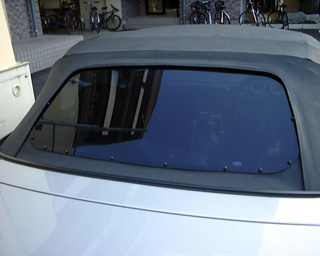
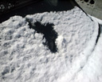
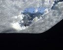
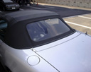
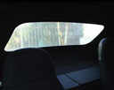
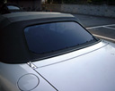
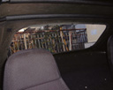
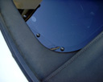

ある雪の日、積もった雪を手で払っていました。手で直接雪を触ると冷たかった ので、そのうち内側から叩いて雪を落したりしていました。ソフト・トップは特 に問題なかったのですが、リア・スクリーンにさしかかったとき、「ずぼっ！」っ て感じで、かなりショックでした。雪で冷えてビニールが硬化していたのでしょ うか、かなり簡単に割れてしまった印象です。NB用のガラス製スクリーン付の幌 に交換するという手もありましたが、結構するので、 ズーム・エンジニアリング が出しているアクリル製のスクリーンに張り換えることにしました。
 |
割れてしまったリア・スクリーン |
 |
割れてしまったリア・スクリーン(内側から) |
 |
割れてしまったリア・スクリーン２ 外側から見ると、立て方向にしわが入っているのがわかる。 |
 |
割れてしまったリア・スクリーン２(内側から) 張り換え直前。全体的に白っぽく、あまりよく見えない感じ。(相対的に) |
 |
張り換え後のリア・スクリーン 張り換えはまず、カッターで純正のスクリーンの淵を切ってとりのぞき、 そこに新しいスクリーンをガムテープ等で仮止めしてネジ穴を空ける。 次に淵をよく洗浄してから、スクリーンに付いている両面テープの保護シートを 剥がして張り付け、最後にネジで固定して完成。 |
 |
張り換え後のリア・スクリーン(内側から) なんかすごく見やすくなった。(これまた撮影条件が違うので比較しにくい？) |
 |
色がクリアではなくて暗めなのと、ネジ止めされているので、 なんか雰囲気までかわった。 |


結果的に、非常に見やすくなりました。今回は割れてしまったのをきっかけに交 換しましたが、例え割れたりしなくても交換するだけの価値があると思います。 純正のリア・スクリーンでも雨の日、高速で走ると若干見やすくなる感じがしま すが、常にそれ以上に視界良好になりました。
ｂｙ すすたわり